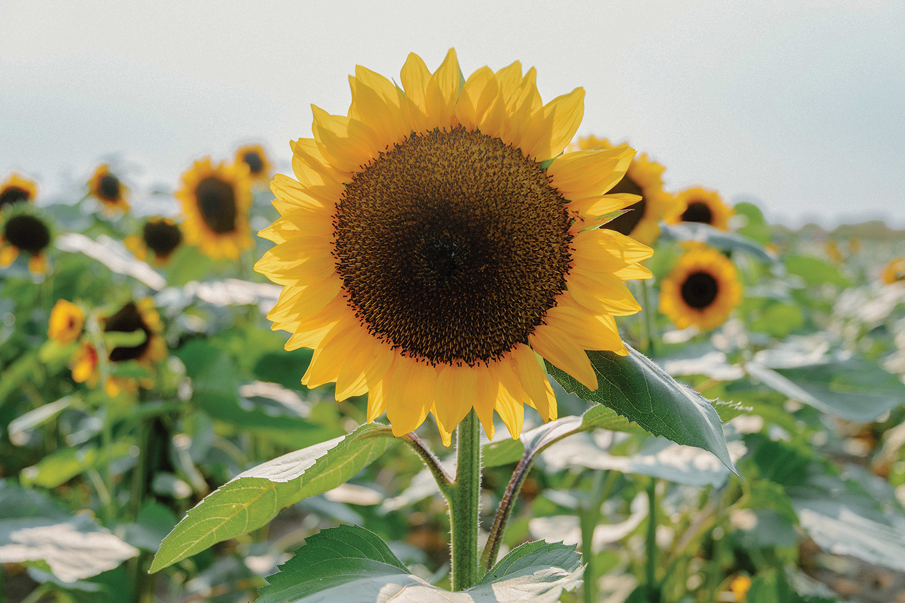
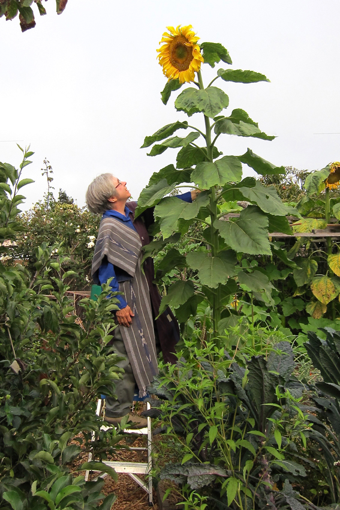
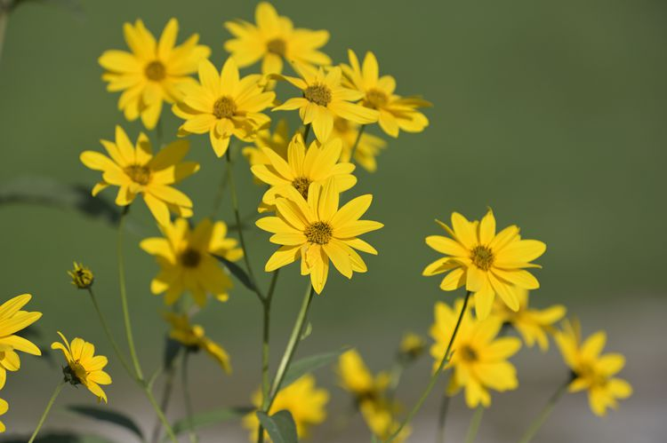
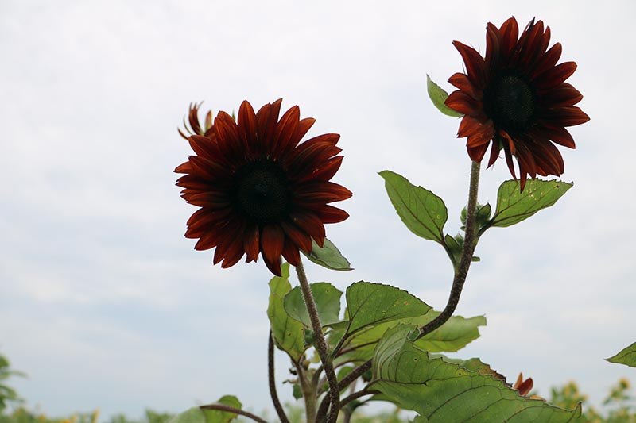

Dwarf Sunflows
Dwarf sunflowers take 7-14 days to germinate. Like all sunflowers, they prefer full sun. They like 8-12
inch
spacing so the leaves do not touch, as crowding promotes taller flowers and weaker stems. With these
sweet
flowers you can expect a long lasting 8-10 inch bloom and enjoy the flower for up to 9 weeks.

Mammoth Sunflowers
Germination for mammoth sunflowers is 14 days. They like to be planted in May or June and need 12-18 inch
spacing for room to grow. Being of a taller variety they need staking in the early growth stage. Twine
or
soft ties can be used to secure the stalk about every 6 inches. The stalks grow 9-10ft tall with heads
reaching between 11-14in.

Swamp Sunflowers
"Despite its drab-sounding name, the swamp sunflower is an eye-catching flower with bright yellow petals and
perky gold-tipped stamens. This tall perennial sunflower is tolerant of salt air and salty soil. Birds enjoy
the seeds after frost kills the foliage, so wait until spring to cut back."-thespruve.com
The swamp sunflower is a parennial, which means it comes back year after year. Most sunflowers are annuals,
so they have to be re-planted each season. Height: 6-9 feet, native area: Southeast US, Florida, Alabama

Chocolate Sunflowers
‘Chocolate’ has its own delicious appeal – as eye candy. It sports deeply-colored blossoms in shades of
mahogany and cocoa brown.
It grows four to five feet tall, and each plant produces multiple blooms that pollinators seek out.
Taking 65 to 75 days to bloom from seeding, the flowers provide color in the garden after the spring annuals
have faded, and before the slower-to-mature sunflowers like ‘Mammoth’ start blooming in late
summer."-gardenerspath.com